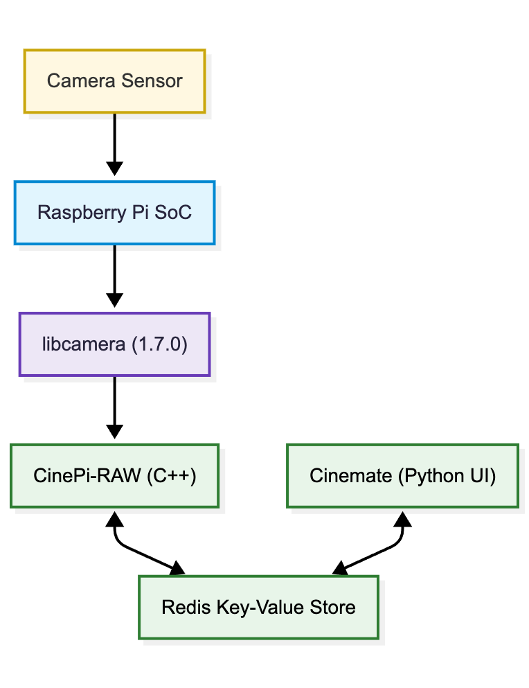

The CineMate stack explained#
The camera is five pieces stacked bottom to top: a kernel driver on the sensor chip, libcamera
handing finished frames up, cinepi-raw running the capture loop and writing the CinemaDNGs, Redis holding the live state, and CineMate owning everything you touch. CineMate and cinepi-raw are separate processes, and Redis serves as an "API"-layer between them.

The layers#
| Layer | What it is | Responsible for | Documented in |
|---|---|---|---|
| Sensor kernel driver | A V4L2 kernel module, selected by a dtoverlay= line in config.txt |
Register writes to the sensor, the readout modes it offers, sensor-specific controls such as ClearHDR | Boot config, Camera sensors and frame rates |
| libcamera | The libcamera camera framework, in Raspberry Pi's fork of it, built here from this project's own fork (Tiramisioux/libcamera, branch cinemate) |
Configuring streams, applying controls such as analogue gain and frame duration, delivering completed frame requests | Manual installation |
| cinepi-raw | A C++ fork of rpicam-apps, built on CinePi RAW |
The capture loop, the CinemaDNG writer, the HDMI and MJPEG previews, and a separate audio-capture process | Recompiling cinepi-raw, CinePi RAW terminal commands |
| Redis | An off-the-shelf in-memory key-value store with publish/subscribe channels | Holding live state (iso, fps, is_recording, …), carrying control changes down on the cp_controls channel and per-frame stats up on cp_stats |
Redis API, Redis key reference |
| CineMate | A Python program, src/main.py |
All operator surfaces, storage handling, settings, and launching cinepi-raw | Simple GUI, Web GUI, Terminal commands |
Following a setting down to the sensor#
Picking 800 from the ISO selector in the web GUI takes six hops.
| Hop | What happens |
|---|---|
| 1. Browser | Sends the CLI command line set iso 800 as the plain-text body of POST /api/v1/cmd. Every web GUI control is a command string. |
| 2. Dispatcher | CommandExecutor.handle_received_data() longest-prefix matches set iso to CinePiController.set_iso, then takes a lock with a two-second timeout. On timeout the command is dropped and the API answers 503 err busy. The CLI, the serial port and the settings editor all enter here. |
| 3. Controller | set_iso() returns early if the ISO lock is on. Otherwise it clamps 800 into the iso_steps range from settings.jsonc and writes to Redis. |
| 4. Redis | The key iso is written and its name published on the cp_controls channel. A value that has not changed is not published, so a repeated command never reaches cinepi-raw. |
| 5. cinepi-raw | Subscribed to cp_controls, it looks the published name up in a handler map, divides by 100 and sets libcamera::controls::AnalogueGain. |
| 6. libcamera | Applies the gain to the following frames through the sensor driver. |
What runs as what#
Six systemd units, and the important thing about them is what does not depend on CineMate.
| Unit | What it is |
|---|---|
cinemate-autostart.service |
CineMate itself, started at boot |
redis-server |
The key-value store both programs depend on. Enabled by the installer |
storage-automount.service |
Mounts removable drives, RAW-labelled ones at /media/RAW |
wifi-hotspot.service |
The CinePi access point. Independent of CineMate, so it survives a crash |
cinemate-recovery.service |
A root-run console on port 8080 for a camera that will not start |
redis-log-maintenance.timer |
Keeps the Redis log from filling the root filesystem |
cinepi-raw is not in that list. It has no unit of its own: CineMate launches it as a child
process, one per detected sensor, and supervises it. Stop CineMate and the recorders stop with it.
That is why a resolution or ClearHDR change can relaunch the recorder without anything at the
systemd level noticing.
The three services either side of CineMate are deliberately independent of it, because each one answers a question you need answered most when CineMate is the thing that broke:
- The hotspot stays up.
wifi-hotspot.servicereconciles the access point on its own timer and reads the credentials straight fromsettings.jsonc. NetworkManager also persists the profile with autoconnect, so the network is back at boot before any Python has run. A CineMate that crashes on startup is still reachable. - The recovery console stays up.
cinemate-recovery.serviceruns as root on port8080, uses the standard library only, and has no dependency oncinemate-autostart.service. It exists to diagnose and repair a camera whose main program will not start, which is exactly when the settings editor on port 5000 is unavailable. - Storage mounts itself.
storage-automount.servicereacts to udev events, so a drive appearing or disappearing is handled whether or not CineMate is running.
Restarting CineMate is therefore cheap and safe. It does not drop the hotspot, does not unmount the
card, and does not take the recovery console with it. restart cinemate on the CLI, System →
Restart CineMate in the settings editor, and a settings save all do the same thing. A reboot is
only needed for config.txt changes, which the firmware reads at power-on.
Full detail on each unit, including how to check and restart them: System services.